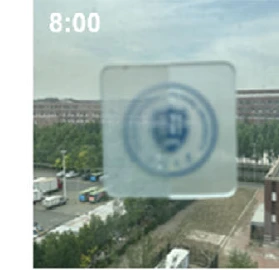
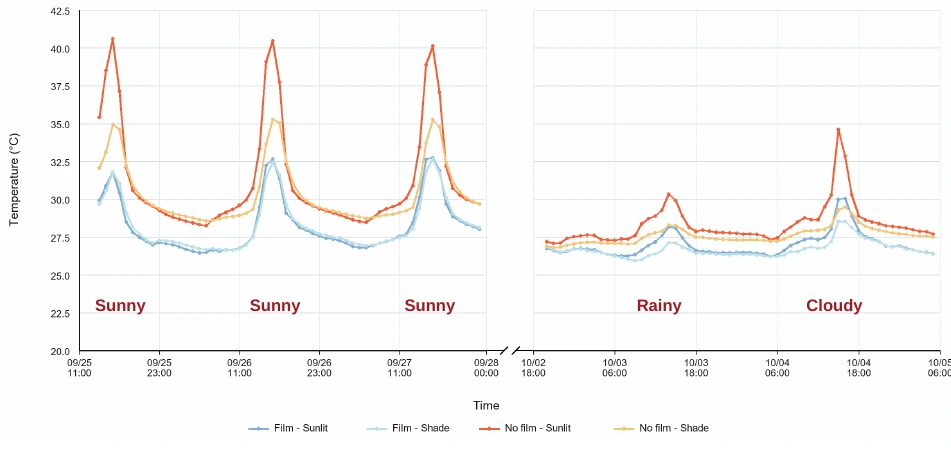

主玻璃 / 光谱调控
透过薄膜看窗外
可见光让人看清景物，近红外辐射也会带来热量。高透样品通过折射率匹配减少可见光散射，涂层中的纳米颗粒则吸收部分近红外辐射。


照片取自项目补充材料图 2。光谱指标来自高透样品的仪器测量。查看论文图 2
窗边模块 / 吸湿与再生
一张薄膜的昼夜变化
亲水纳米纤维捕集空气中的水汽，水凝胶层储水。日照促使材料失水，光散射增强，透光状态也随之变化。

样品观测时间
08:00
早晨的窗边样品。沿时间轴可比较白天的透光变化与夜间的样品外观。
另一项密闭舱实验中，5 × 5 × 0.5 cm 的 MRLR 样品在 6 小时内将相对湿度降至 53.76%。舱体尺寸为 40 × 60 × 40 cm。
时序照片取自湿度响应与调光薄膜（MRLR）论文图 4d，湿度数据见图 3b。查看昼夜观测研究
延伸研究 · 从空气中收集的水可以用在哪里？
另一款吸附储水薄膜用于快速除湿与植物灌溉。研究中，约 1 g 样品使 0.096 m³ 密闭容器的相对湿度在 1 小时内从 90.7% 降至 21.6%。论文另报告环境条件下约 1.1 kg/(m²·天) 的集水表现。阅读吸附储水研究
建筑验证 / 双房间实测
直晒点的温差有多大？
连续三个晴日，裸玻璃房间的直晒测点峰值约 40°C，涂膜房间约 32–33°C。雨天两组曲线更接近。测点的位置与天气共同影响了观察到的差异。

窗玻璃和内墙的温度也一样变化吗？
涂膜房的窗温平均高约 1.4–1.7°C，内墙温度平均低约 0–0.6°C。光谱测试表明，高透配方对近红外的阻隔主要来自吸收。房间内的直晒点、窗玻璃和内墙分别代表不同的测量对象。
香港案例 / 工程测算
既有建筑怎样选方案？
HKJC 建筑评估比较了更换真空 Low‑E 玻璃，以及在现有单层、双层玻璃上使用涂层。选择施工范围，查看同一范围内的节能率、投资和回收期。
| 技术方案 | 范围 | 预计节能率 | 节能量（kWh） | 投资（港元） | 回收期（年） |
|---|---|---|---|---|---|
| 更换真空 Low‑E 玻璃 | 全楼 | 11.27% | 864,622 | 18,000,000 | 13.01 |
| 更换真空 Low‑E 玻璃 | 南向 | 5.18% | 397,595 | 6,331,521 | 9.95 |
| 单层玻璃涂层 | 全楼 | 5.06% | 388,082 | 119,845 | 0.19 |
| 单层玻璃涂层 | 南向 | 2.95% | 226,267 | 42,154 | 0.12 |
| 双层玻璃涂层 | 全楼 | 9.74% | 746,633 | 2,857,496 | 2.39 |
| 双层玻璃涂层 | 南向 | 8.66% | 663,744 | 2,802,269 | 2.64 |
项目补充材料图 6、项目演示第 13 页。以上为指定建筑和施工范围下的方案估算。
研究资料
论文与项目介绍
按样品与应用查阅原始研究。香港理工大学研究及创新事务处的视频介绍了团队的建筑窗膜工作。